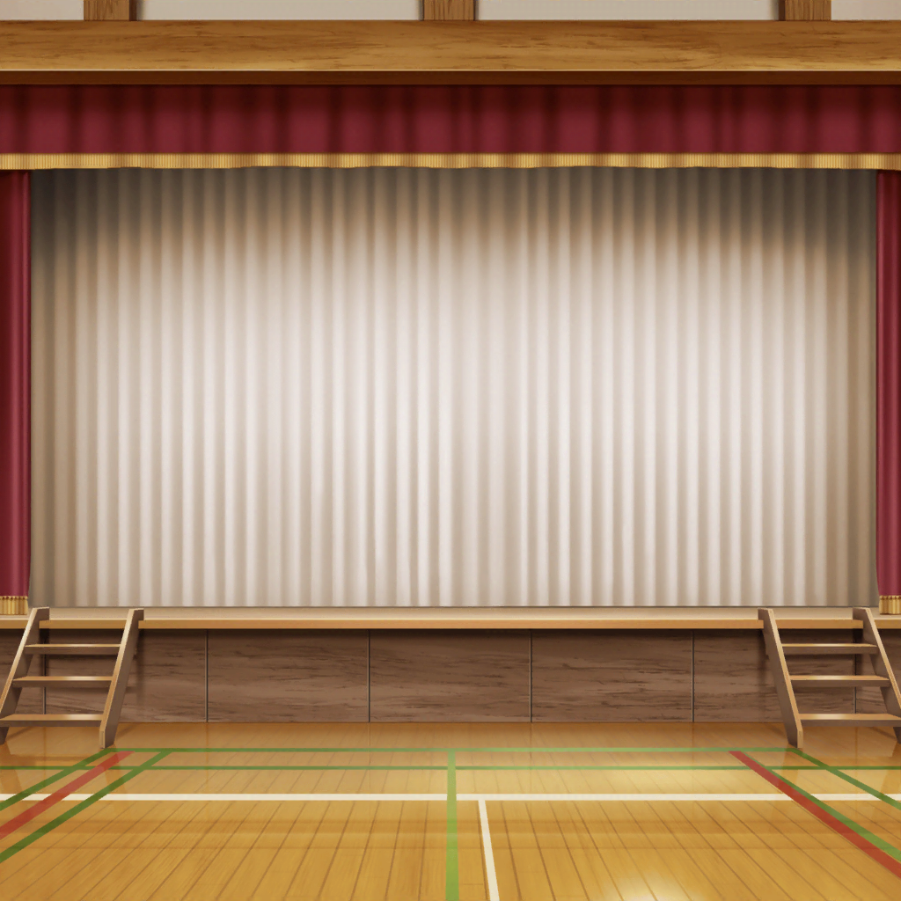

病院
沙綾
なんでもなくてよかった……
沙綾の母
だから、ただの貧血って言ってるじゃない。
沙綾は心配しすぎなの
沙綾
だって……
沙綾の母
文化祭は？
香澄ちゃんから連絡来てるんじゃない？
沙綾
あ、うん、留守電入ってるみたい。
ちょっとごめん……純と紗南見てて
携帯電話
保存されたメッセージは２件です
香澄
『さーや？ あ……香澄です』
香澄
『お母さん、どう？
さーなん泣いてない？ じゅんじゅん元気？
さーや……大丈夫？』
沙綾
…………
香澄
『カフェはね、大成功！』
香澄
『みんなすごいの！
お客さん、パンおいしいって！
お持ち帰りする人もたくさん！ えへへ……』
たえ
『沙綾？ 沙綾に電話してるの？』
クラスメイトA
『マジ？ おーい、沙綾！』
クラスメイトB
『お母さん大丈夫？ こっちは任せて！』
りみ
『うう、沙綾ちゃーん！』
たえ
『山吹ベーカリーの曲作ったから聞いて』
香澄
『わわっ！ みんなストップ！』
携帯電話
２件目のメッセージです
香澄
『もしもし、こっちは大丈夫！
すごく楽しい！ すごく、すごく、すっごく！』
香澄
『だから……ライブもがんばるね！
さーやに届くくらい、がんばるから！』
沙綾
香澄……
香澄
『それから、歌詞……さーやの家に届けたよ。
さーやとみんなで作った歌。よかったら読んでね』
沙綾
朝の手紙……
確か、ポケットに入れてたっけ……
沙綾
『STAR BEAT! 〜ホシノコドウ〜』……
タイトル決まったんだ
沙綾
……………………
沙綾
香澄……
私も、私だってバンドしたい……
したいよ。でも……
沙綾の母
行って、沙綾
沙綾
母さん……
沙綾の母
沙綾は優しいね。
お母さんにもみんなにもすごく優しい。
その優しさをもっと自分に向けて
沙綾
できないよ……
沙綾の母
沙綾ならできる。ひとりじゃないんだから
紗南
さーながいるから大丈夫
純
俺も。もう泣かないから
沙綾の母
なんでも自分ひとりで背負わなくていいの。
純も紗南も沙綾に守ってもらってばっかりじゃないよ
沙綾
母さん……純、紗南……
沙綾の母
だから、沙綾も好きなこと我慢しないで。
母さんは平気だから、安心していってらっしゃい
沙綾
なんか私全然ダメだね……
沙綾
……ありがと。母さん、純、紗南。
行ってくるね……！

花咲川女子学園 廊下
沙綾
はあ、はあ……！
香澄、みんな、待ってて……！
夏希
……沙綾
沙綾
ナツ……
フミカとマユも……！
夏希
文化祭ライブ、私達も参加してるんだ。
と言っても、もう出番終わっちゃったけどね
沙綾
あのね、ナツ、フミカ、マユ、私……
夏希
沙綾、もう一度バンドやりなよ
沙綾
え？
夏希
すっごく楽しかったよ。
一緒に練習して、曲考えたり、バンドのこと話したり、
沙綾とバンドができて楽しかった
沙綾
……私も楽しかった！
みんなとバンドするの大好きだったよ！
夏希
それなら、もう一度やってみなって！
私もフミカもマユも応援してるから！
沙綾
ナツ……
夏希
ほら、戸山さん達待ってるよ、行って
沙綾
うん……！
里実
あの、スティック使って……
沙綾
あ、えっと……
夏希
CHiSPAの新メンバー、サトちゃん！
恥ずかしがり屋だけど演奏は派手！
沙綾
そっか……
ありがとう、借りるね！

花咲川女子学園 文化祭ライブステージ
香澄
ありがとうございました！
次は今日のために作った曲です！
香澄
みんなで作った曲……今日は１人いないけど
いつか一緒に歌おうって約束しました
香澄
いつかはまだだけど……信じてる。
一緒に歌うことできるって
有咲・りみ・たえ
…………
香澄
そんな気持ちを込めて歌います。
聞いてください……
沙綾
みんな……！
香澄・たえ・りみ
さーや！
沙綾！
沙綾ちゃん！
香澄
えへへ、待ってた！
沙綾
ありがと。香澄、みんな
有咲
来たのはいいけど、いきなり曲できんの？
沙綾
どうだろ、１回曲聞いただけだし
たえ
そこは気持ちで
りみ
一緒にがんばろ！
香澄
お待たせしました！
聞いてください……
『STAR BEAT! 〜ホシノコドウ〜』
たえ
（沙綾のドラム気持ちいい。音が弾んでる）
りみ
（なんだかドラムの音が背中を支えてくれてるみたい……）
有咲
（山吹さん、ちゃんと叩けてんじゃん……よし、こっちも集中！）
香澄
（楽しい……！ 楽しいね、さーや！）
沙綾
（すっごく楽しいよ、香澄！
やっぱり私、バンドが好きみたい……！）
香澄
…………！
有咲
おい、メンバー紹介だろ
香澄
あ、そっか。えへへ……
香澄
メンバー紹介します！
青いギターのおたえ！
香澄
ベースのりみりん！
香澄
あっちが有咲！
有咲
キーボードも付けろ！
香澄
そして、ドラムの……さーや！
沙綾
…………
香澄
ランダムスターの戸山香澄！
香澄
私達５人で……！
Poppin'Party
Poppin'Partyです！